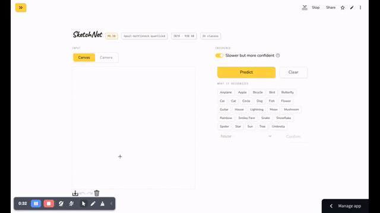

Field notes - Machine learning - April 2026
A Sketch Recognition Learning Journey
Training a convolutional neural network to recognise hand-drawn sketches. Four turning points that changed everything.
The project started with Quick Draw's pre-rendered 28×28 bitmap images, the same format as MNIST. Over several runs, better learning rate scheduling, more training data, and class-weighted loss moved accuracy from 90.5% to 92.6%. Then it stopped. Every new attempt landed within 0.1 percentage points of the same ceiling.
Four experiments later, the model hits 95.1% accuracy on Quick Draw, 78.6% on independent real-world drawings from a different dataset, runs in just under one millisecond per sample on CPU, and weighs 938 kilobytes on disk. The path between those numbers is the interesting part.
I. The 28px Ceiling
Baseline -> best at 28 pixels
The obvious fix to the 92.6% plateau was to upscale the bitmaps to 64 pixels and give the model more spatial room. That attempt took eleven hours on CPU and came back worse at 90.4%. The reason was straightforward in hindsight: training data was blurry 28-pixel bitmaps bicubically stretched to 64, while a live canvas produces sharp 480-pixel drawings downscaled to 64. The model had learned textures that did not exist at inference time.
The limit was not the architecture or the training procedure. Moon and circle share the same round shape. At 28 pixels, distinguishing them requires differences measured in single pixels. That feature does not exist at that resolution, and no amount of augmentation can create information that was never there.
II. Resolution and Speed
128px native rendering, then MPS training
Quick Draw distributes the original stroke vectors in Newline Delimited JSON (NDJSON) format, not just the pre-rendered bitmaps. Rendering those strokes directly at 128×128 produces images with the same sharp line quality as a live canvas draw. The texture gap that killed the upscaling attempt disappears entirely, because training and inference now use the same rendering pipeline.
The jump was immediate: accuracy went from 92.6% to 94.6%, clearing the 28-pixel ceiling that had been the limit for months. The model now had enough resolution to tell apart moon from circle, sun from spider, cat from dog.
The cost was training time. Eight hours on CPU per run. Moving to Apple Silicon's Metal Performance Shaders (MPS) GPU was the obvious next step, but the first attempt produced a confusing result: epochs were fast at first, then each one took progressively longer. A run projected to finish in 30 minutes stretched past five hours.
After the sync fix: consistent 150 seconds per epoch, 11 epochs with early stopping, 31 minutes total. Accuracy reached 95.3%. A 15× speedup from eliminating queue pollution, not from raw compute.
Training time
III. 37× Smaller
Architecture, then quantization
A 34 MB model is a real deployment problem on a memory-constrained server. Profiling showed why it was so large: a single fully connected layer projected the flattened 8×8 feature map (16,384 values) to 512 dimensions. That one layer held 95% of all the model parameters. Everything else was rounding error.
The first idea to fix it was Global Average Pooling (GAP), which collapses the spatial grid into a single vector by averaging across positions. Two separate attempts at this both failed at around 91%, a 4 percentage point drop. The reason was visible in the per-class breakdown: sun fell to 69%, moon and bird also suffered badly. These classes rely on where features appear, not just whether they exist. A sun has radial lines emanating from a center point. A bird has wings on the sides. GAP averages all positions and destroys that information.
A 1×1 convolution bottleneck worked where GAP failed. It reduces the 256 feature channels down to 64 while keeping the 8×8 spatial grid completely intact. The fully connected layer then sees 4,096 values instead of 16,384. Parameter count fell from 8.8 million to 933,000. File size went from 34 MB to 3.75 MB. Accuracy stayed at 95.4%.
Post-training static quantization brought it the rest of the way. The process fuses each Convolutional, Batch Normalization, and Rectified Linear Unit triplet into a single operation, then runs a 1,010-sample calibration pass with worst-case classes over-represented to learn the scale of each layer's activations. Weights convert from 32-bit floats to 8-bit integers. Result: 3.75 MB to 938 KB. Accuracy: 95.35% before quantization, 95.36% after. The quantization cost nothing.
Model file size
IV. The Test Set Was Lying
Real world validation
With 95.36% on the Quick Draw test set, the model looked finished. A spot check against tablet-drawn sketches from the TU Berlin dataset told a different story: accuracy on those independent drawings was around 55%. The same model, evaluated on a harder distribution, failed more than it passed.
The gap made sense. Quick Draw strokes are clean, thin, and drawn at a consistent speed with a mouse or touchpad. Real canvas sketches have visible wobble from hand tremor, varying line weight from pen pressure, and thicker strokes that sometimes bleed at corners. The model had been trained and tested on the same clean distribution. Of course it scored well on the test set.
Closing the gap meant making training data look more like real drawings. The stroke rendering pipeline was extended with three changes: stroke widths randomised between 3 and 8 pixels to match the 7-pixel canvas brush, a cumulative Gaussian wobble applied perpendicular to each stroke tangent to simulate hand tremor, and a small random morphological dilation or erosion as a proxy for pen pressure variation.
On the Quick Draw test set, accuracy dropped from 95.36% to 95.08%. That 0.28 percentage point drop looked like a regression. On 1,760 independent tablet-drawn sketches from TU Berlin, accuracy went from 55.3% to 78.6%, a 23 percentage point gain. Dog improved by 50 points. Butterfly by 42 points. Guitar by 42 points. The model that appeared to regress was the model that actually worked in the real world.
The trade-off looks asymmetric at the confusion-pair level. Wobble helped pairs where the distinguishing feature was structurally robust to noise, and slightly hurt pairs where the feature was already fragile at 128 px:
| Confusion pair (Quick Draw test set) | Exp G | Exp H | Δ |
|---|---|---|---|
| sun -> spider | 138 | 98 | −40 (−29%) |
| moon -> circle | 227 | 239 | +12 (+5%) |
Sun's radial rays still read as radial when jittered, so wobble exposed the model to more variants of the same structure. Moon's crescent at 128 px was already a borderline case against a circle; wobble pushed a few more samples across that line. The Quick Draw dip is the net of these opposing shifts - paid on some pairs to win on the broader distribution.
Lessons learned
- Render native, not upscaled. Upscaling a low-resolution training image creates a texture gap between blurry training data and sharp inference inputs. The right fix is to render at the target resolution from the original source, in this case raw stroke coordinates, not to interpolate bitmaps that were never high quality to begin with.
-
Profile before optimising.
The GPU bottleneck was not the 8.4 million parameter matrix multiplication that was blamed
going in. It was 781 per-batch
.item()calls forcing host/device queue drains, with latency compounding nonlinearly. A singletorch.mps.synchronize()call between stages exposed it. The wrong diagnosis would have led to the wrong fix and cost weeks. - Global Average Pooling loses location. Global Average Pooling collapses the entire spatial grid into a single vector, discarding positional information. For sketch recognition, where features like the location of a wing or the center of a radial burst are the signal, that information loss is fatal. A 1×1 convolution bottleneck shrinks channel depth without touching the spatial grid, and it works.
- Your test set might be the wrong metric. A clean benchmark hides generalization gaps when training and evaluation share the same distribution. The augmentation that lost 0.28 percentage points on Quick Draw bought 23 percentage points on independent real-world drawings. External validation on a different dataset is the only honest measure of whether a model is actually ready.
The model in action
Two interaction modes are live in the demo app. The first lets you draw with mouse or finger on a canvas and watch the top-3 predictions update in real time. The second uses the camera: point at a sketch on paper and the same model classifies it from a still frame.

Final scorecard, shipping model
All gates pass
| Check | Gate | Actual | |
|---|---|---|---|
| Overall accuracy (8-bit integer weights) | ≥ 94.5% | 95.08% | ✓ |
| Worst single class accuracy | ≥ 82.5% | 84.45% (moon) | ✓ |
| Train and inference accuracy gap | ≤ 1% | 0.0% | ✓ |
| Accuracy loss from quantization | ≤ 1pp per class | −0.75pp (dog) | ✓ |
| CPU inference latency | < 50 ms | 0.98 ms per sample | ✓ |
| Model file size | < 1 MB | 938 KB | ✓ |
| External validation vs previous model | improve on TU Berlin | 78.58% (+23.3pp) | ✓ |
Architecture SketchNet4PoolBottleneck. Four convolutional blocks (32, 64, 128, 256 filters) on 128×128 input, a 1×1 convolution bottleneck reducing 256 channels to 64 while preserving the 8×8 spatial grid, flatten to 4,096, Linear(128) with Dropout(0.3), Linear(25 classes). 933K parameters in 32-bit floating point. Quantized to 8-bit integers using post-training static quantization. All training from scratch. No pretrained weights, no fine tuning.